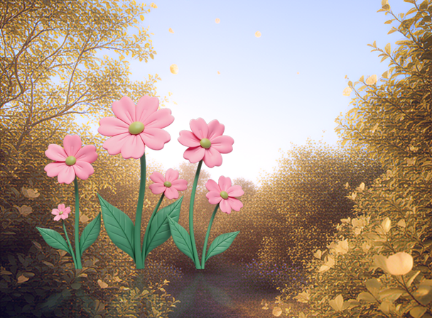
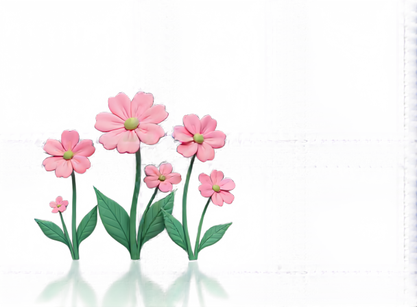
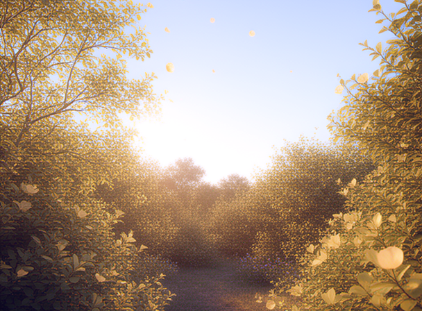
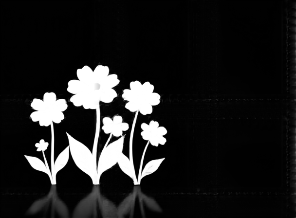
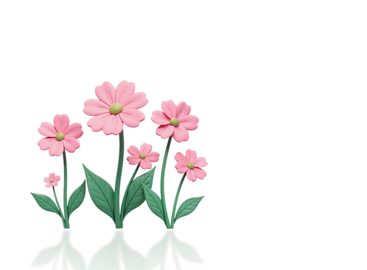
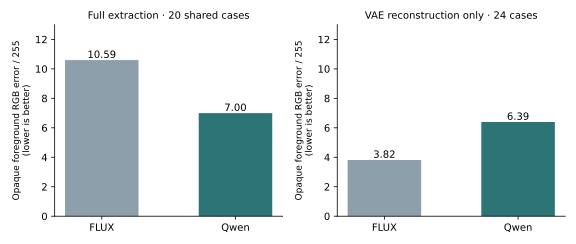

Extracting Foregrounds with Native RGBA
I trained a new foreground extractor on Qwen Image 2.1. Give it a picture with an object and the matching background without that object: it returns an RGBA cut-out, with continuous transparency, in four diffusion steps.
The useful change is that Qwen already understands RGBA. My FLUX experiment needed a custom VAE to add transparency. Here I use the model's native four-channel VAE and train only the extraction LoRA. There is no extra VAE conversion or VAE training to reproduce.
1. See the outputs
These are raw outputs of the 15,000-step checkpoint: no colour correction, alpha thresholding or mask cleanup. Change the preview background to inspect edges, and download the transparent PNG.



Show clean background, ground truth and alpha



2. What I trained
PlateExtract is a rank-32 LoRA on Viggle's four-step distilled Qwen Image 2.1 transformer, using its exact training revision. It adapts 224 linear projections across 32 transformer blocks: attention query/key/value/output projections and image MLP layers. The native VAE and text encoder stay frozen.
The run uses 2,039 composite/background/RGBA triplets at 512 and 768 pixel-area resolutions, AdamW8bit, learning rate 5e-5, and accumulation 3. I carried over the FLUX extractor's MAE, alpha-edge and sharpness recipe into a dedicated Qwen trainer. I stopped at 15,000 steps after saving and evaluation completed.
This is a new composite + background extractor, distinct from the earlier mask-conditioned Qwen experiment mentioned in the FLUX paper.
3. Does it preserve colour?
To my eye, many outputs look very close to the original foreground. I checked that impression against the ground-truth RGBA objects, measuring average absolute RGB error on pixels whose true alpha is above 0.95. Transparent background colours are excluded.
On the 20 shared extraction examples, Qwen has about 34% less opaque foreground RGB error than the released FLUX 4B extractor: 7.00/255 versus 10.59/255. This compares Qwen at four steps with FLUX 4B at six steps, using different seeds and output-size handling. It does not prove that the native VAE caused the difference.

I also isolated the VAEs by encoding and decoding the same 24 RGBA images, at the same dimensions and using the posterior mode. In this test, our custom FLUX VAE has less RGB error: 3.82/255, versus 6.39/255 for native Qwen. Native RGBA is a simpler setup; it does not automatically mean less reconstruction loss.
4. Transparency and remaining errors
| 15K checkpoint · 24 validation objects | Result |
|---|---|
| Foreground overlap (IoU at alpha > 0.5) | 0.9431 |
| Mean alpha error (0–1) | 0.01197 |
| Nearly opaque RGB error (0–1) | 0.03024 |
These 24 cases were inspected repeatedly during training; they are a validation set, not a fresh independent test. Per-image extraction scores · VAE comparison and method.
Colours are not pixel-exact, and faint details can disappear. The papercut example above is a harder case. On the 20 common examples, Qwen improves overlap but its average alpha error is higher than FLUX 4B's (0.01255 versus 0.00862). A strong binary outline score does not guarantee that every soft shadow or glow is preserved.
5. Try it
Download the LoRA on Hugging Face and follow the Qwen inference setup. The Gradio demo offers FLUX Klein 4B, FLUX Klein 9B and Qwen Image 2.1 in the same extractor selector.
python demo/qwen_extract.py \
--composite picture.png --background clean_background.png \
--output extracted.pngBuilt with Qwen. Uses the native components from Qwen Image 2.1 and the pinned full transformer from Viggle turbo. Weight licence: Qwen Research License. Code: MIT.